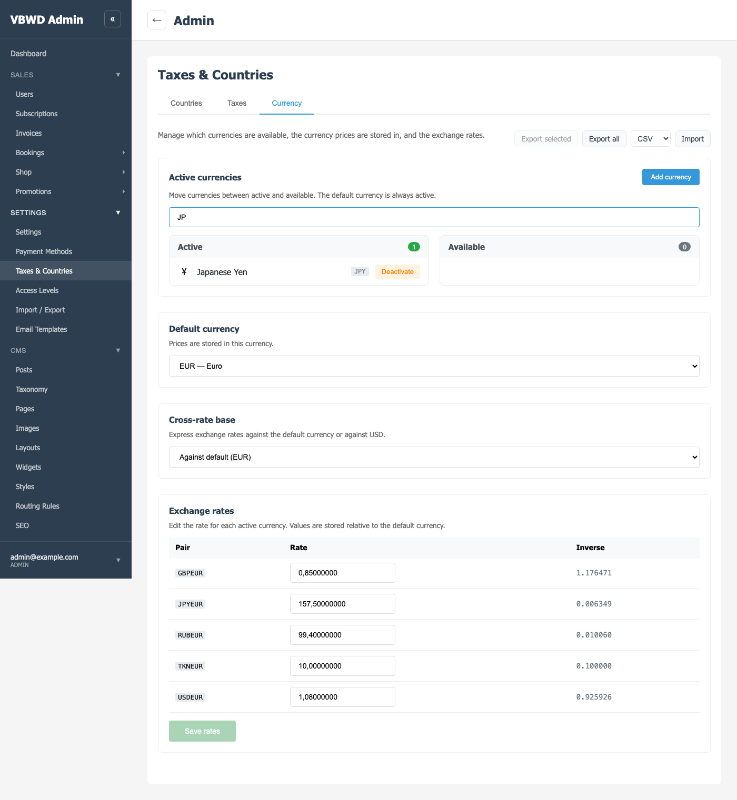
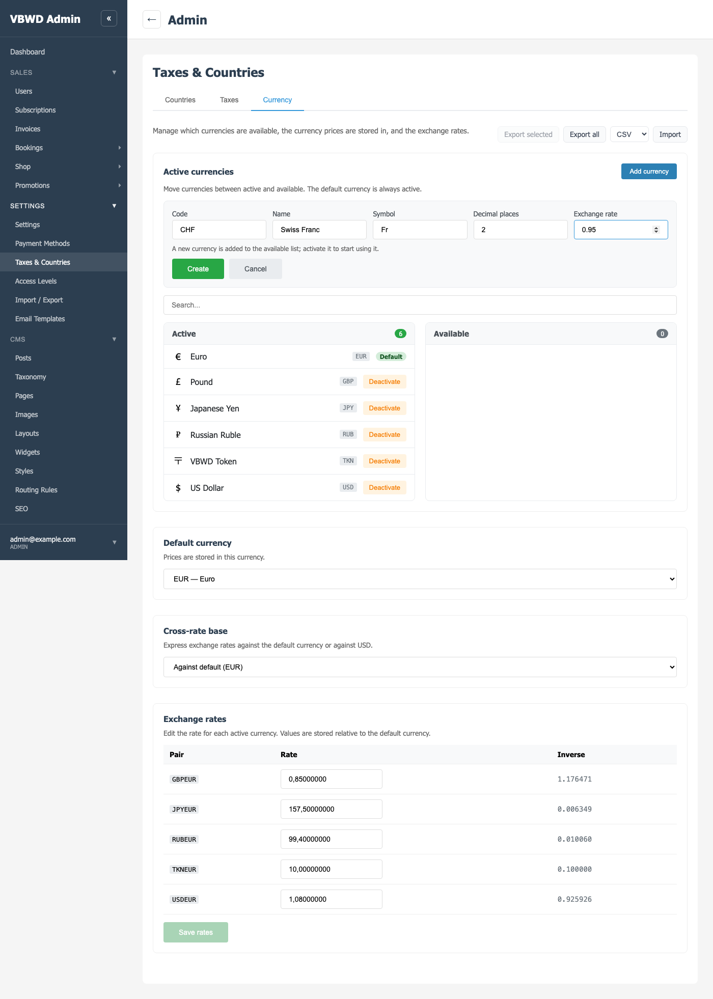
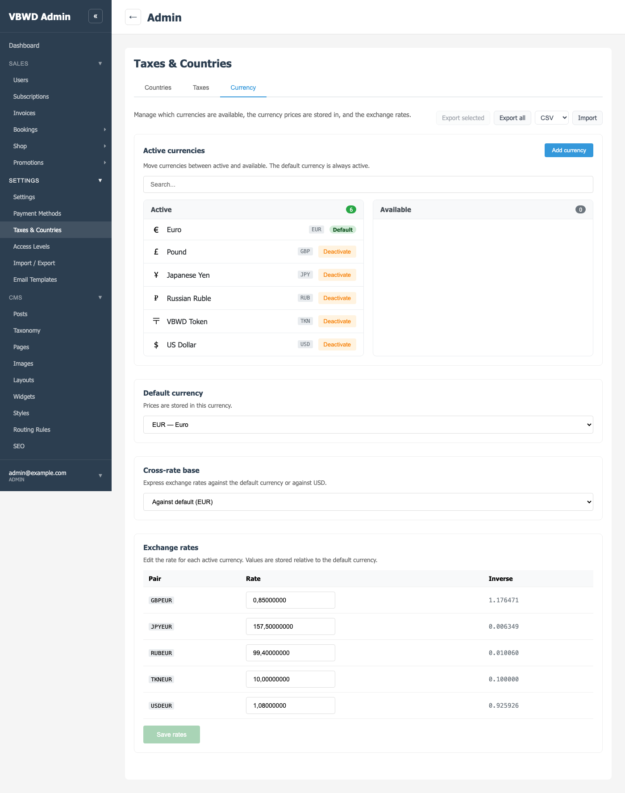
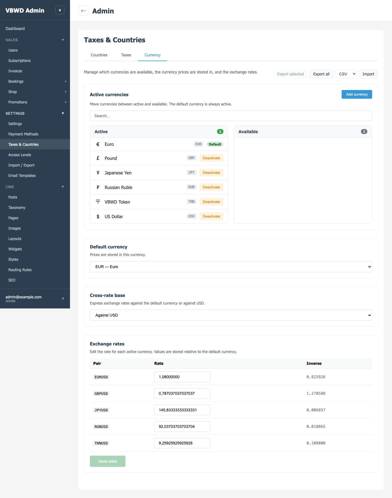

S84 — Currency admin tab
2026-06-13 · /admin/settings/tax-and-countries → Currency. Active/default/base in core settings JSON; catalog+rates on vbwd_currency. Add/delete catalog currencies; one general Save for rates.
1. Currency tab — all four blocks
The Currency sub-tab: block 1 active/available selector + search + Add currency, block 2 default selector, block 3 cross-rate base switcher, block 4 editable rate sheet with one general Save, plus the single currencies import/export. Base = default (EUR).

2. Block 1 — quick search
Typing JP filters the lists to JPY. Currencies move between Active/Available; the default is pinned active.

3. Add currency — form
The Add currency button opens an inline form (code/name/symbol/decimals/rate). Submitting creates an inactive catalog currency that lands in the Available panel.

4. New currency CHF in Available (with delete icon)
CHF was created inactive → it appears in Available with a delete icon (only Available/inactive currencies can be deleted; the active + default ones cannot).
5. CHF deleted from the catalog
Clicking the delete icon (confirm) removed CHF from the catalog — back to the original set. The default and active currencies have no delete control.

6. Block 4 — rate sheet, base = default (EUR)
Pairs against the default: GBPEUR=0.85, USDEUR=1.08, JPYEUR=157.5, RUBEUR=99.4. Edit any row and click the single Save rates to persist all changes.

7. Block 3 + 4 — base = USD
Flipping the base to USD recomputes to …USD pairs plus the editable EURUSD=1.08 default row. Lossless to 1e-7; values carry full ≥8 dp precision.

8. Default EUR → USD (rates re-based)
Setting USD as default re-bases every stored rate (new_X = old_X / old_USD_rate): USD→1.0, EUR→1/1.08. Pairwise conversions preserved within 1e-7.